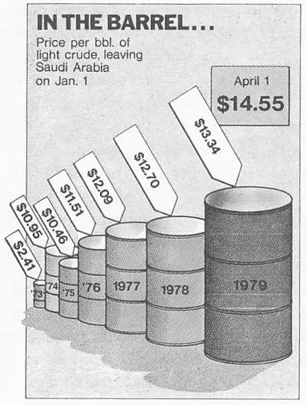

In general you do not want to let the computer use its
default values. Unless you are using a specific program for a
specific field the default values will not be right for your work.
This is especially true of programs like Word and Excel (though
both have improved a lot in the last couple years in this regard).
Lets start with tables
- the format of a table can greatly enhance or reduce the
readability.
Here is a table from the US Environmental Protection Agency from a
few years ago - the Total Emissions column of data is centered
making it very hard to compare the values within.
| Source Sector | Total Emissions |
|---|---|
| Electricity Generation | 652,314 |
| Fires | 14,520,530 |
| Fossil Fuel Combustion | 1,499,367 |
| Industrial Processes | 2,414,055 |
| Miscellaneous | 33,786 |
| Non Road Equipment | 22,414,896 |
| On Road Vehicles | 62,957,908 |
| Residential Wood Combustion | 2,704,197 |
| Road Dust | 0 |
| Solvent Use | 3,294 |
| Waste Disposal | 2,018,496 |
A better version of the table would be the following where both
the sources and the amount of emissions are easier to see and
quickly grasp:
| Source Sector | Total Emissions |
|---|---|
| Electricity Generation | 652,314 |
| Fires | 14,520,530 |
| Fossil Fuel Combustion | 1,499,367 |
| Industrial Processes | 2,414,055 |
| Miscellaneous | 33,786 |
| Non Road Equipment | 22,414,896 |
| On Road Vehicles | 62,957,908 |
| Residential Wood Combustion | 2,704,197 |
| Road Dust | 0 |
| Solvent Use | 3,294 |
| Waste Disposal | 2,018,496 |
Here is a made-up table - its hard to see any pattern in the
Yes/No Values.
| Yes |
No |
Yes |
| Yes |
No |
No |
| No |
Yes |
Yes |
| No |
No |
No |
| Yes |
Yes |
No |
A better version (if all of the cells are filled with one of two
values) would be:
| Yes |
- |
Yes |
| Yes |
- |
- |
| - |
Yes |
Yes |
| - |
- |
- |
| Yes |
Yes |
- |
A different better version of the table using colour to help
highlight the pattern would be:
| Yes |
No |
Yes |
| Yes |
No |
No |
| No |
Yes |
Yes |
| No |
No |
No |
| Yes |
Yes |
No |
Here is a table from the Nielsen Games page:
http://blog.nielsen.com/nielsenwire/media_entertainment/top-pc-game-titles-and-consoles-october-2008/
The Usage Min %
column is hard to read because its left justified.
This version below is easier to read because the right column of
numbers is right justified. The decimal points aline and bigger
numbers look bigger. I also moved the text off the grid lines to
make them more readable.
Be careful of significant
digits
Your table should not show more
accuracy than the accuracy of the data collection. The computer
will happily compute an average out to an alarming number of
digits, but if you only took measurements to one decimal point
then that's as far as you should show any derived (average, min,
max, median, etc) values.
Programs may also reduce your
significant digits by eliminating trailing zeros (turning 4.20
into 4.2) so you will want to force all the data of the same type
collected in the same way to have the same number of significant
digits.
For presentations, your tables should
only show as much accuracy as needed to get your point across. If
two values differ by 100 then you don't need to show those values
to the third decimal place. The additional detail in the numbers
gets in the way of seeing the bigger trend. You can keep another
slide hidden in the slide morgue after the end of your talk that
has all the explicit details in case someone is interested.
Here is another table from the same Nielsen page. Again left
justifying the numbers makes things harder to read, but there are
also an issue of significant digits. We can presume since they
have been in the survey business a long time that they do have
faith in their data out to that degree of significance, and very
likely that number of digits is necessary to disambiguate data
further down the table, but since they are just presenting the top
10, the extra digits get in the way.

I should point out that if I was creating these tables
myself for these notes then I would use white text on a black
background, since these web pages have a black background
A bit more on
text. You have several general choices of font styles to use
Simple charts
Here is an example charting the population of the USA over the last 8 years. First up is an overly dynamic 3D chart with a hard to read set of population numbers and a trend that is made even more pronounced by the 3D viewpoint. Please do not create charts like this.
Here is a less exciting but much more useful version where the data is shown in 2D and the population values have commas to make it easier to see what the numbers actually are. Another good possibility would be to make the vertical column "Population (in Millions)" and then have 270, 275, 280 etc as the vertical values.
and now lets go back to the video game console data from
above.
First let's see a couple charts from the older version of Microsoft Excel. The older Microsoft Excel just wasn't very good at making charts - the colours hurt your eyes, the odd grey background shouldn't be there, etc. Its best just to avoid using the older Excel to make charts. It takes too much time to fix everything that is wrong. Please do not create charts like this.
The latest
version of Excel is much better in dealing with colours and
layout, but has also included lots of 3D bling that should be
avoided. 3D distorts the data and adds in unnecessary details that
makes it harder to see what's really going on. Please do not
create charts like this.
Instead we can display the data without the 3D. By
default Excel with pick the colours for the various data values as
seen above. If the data values are unrelated then the colours
should be unrelated, but here we could also use the colour to
relate consoles made by different manufacturers (blue for Sony,
red for Nintendo, green for Microsoft, and grey for Other, with
the more saturated colours for their latest releases.)
The pie chart makes it easy to see how each console
compares to the whole, but the bar chart makes it easy to see how
they compare to each other. In an analysis tool you may need both
views simultaneously to see the current year, and then additional
visualizations to see the values over time.
Here are a couple other pie chart examples. A good one
comes from:
http://flowingdata.com/2008/09/19/pie-i-have-eaten-and-pie-i-have-not-eaten/
a bad one comes from our local fox news affiliate:
http://flowingdata.com/2009/11/26/fox-news-makes-the-best-pie-chart-ever/
There are many different kinds of charts
A really good book to look at for an introduction to this sort
of thing is Edward Tufte's 'The Visual Display of Quantitative
Information.'
Another good reference is Robert Harris' Information Graphics -
A Comprehensive Illustrated Reference. Here is a nice overview
of different kinds of charts:
We will talk about various kinds of charts throughout
the course.
It
would be good if the colours you choose also work for people who
are colour blind.
8 percent of men
1 percent of women
Are you colour blind? You can check on Wikipedia - http://en.wikipedia.org/wiki/Ishihara_color_test
Here is an image from my backyard run through vischeck to show how it would look for 3 of the more common types of colour blindness.

You
should
at least make sure that you data doesn't blend together or
disappear for people who are colour blind The colours I chose in
the last couple graphs are OK, but an even better way is to
avoid using green in your charts since red/green is the most
common form of colour blindness. Photoshop can be used to
check images (View menu, Proof Setup, Color Blindness), as can the
tool at http://colororacle.cartography.ch/
and couple good web sites to check your graphics are:
http://www.vischeck.com/vischeck/
and http://colorfilter.wickline.org/
There is a nice diagram of the eye at:
http://courses.csail.mit.edu/6.831/archive/2008/lectures/L19-color-design/image004.png
Light is focused by the cornea and the lens onto the retina at the back of the eye.
Vitreous humor - liquid inside the cornea is close to water, and has the same index of refraction as water. If we are under water the light is not refracted, but it is refracted if we are not in water.
Light passing through the center of the cornea and lens hits the fovea (or macula).
Human eye has 2 types of photosensitive receptors: cones and rods
cones
rods
The cones are highly concentrated at the fovea and quickly taper off around the retina. For colour vision we have the greatest acuity at the fovea, or approximately at the center of out field of vision. Visual acuity drops off as we move away from the center of the field of view. However, we are very sensitive to motion on the periphery of our vision, so we can see movement even if we can't see what is moving.
The rods are highly concentrated 10-20 degrees around the fovea, but almost none are at the fovea itself - which is why if you are stargazing and want to see something dim you can not look directly at it.
There is also the optic nerve which is 10-20 degrees away from the fovea which connects your eye to your brain. This is the blind spot where there are no cones and no rods. We can not see anything at this point though we are so used to this that we do not notice it unless we try to see the blind spot.

Bill Sherman's diagram
Try the following link if you want to see (or not see) your
blind spot:
http://serendip.brynmawr.edu/bb/blindspot1.html
with this being the simplest diagram to use
You need to close one eye, look at the plus sign and
then move your head towards and back from the screen until the
black circle disappears. When you are at the correct distance
the size of your blind spot is about the size of that black
circle.
Here is a nice short YouTube video that shows the same
effect -
http://www.youtube.com/watch?v=O7jpJ12lBjg&feature=relmfu
What happens when we walk from a bright area into a dark area, say into a movie theatre? When we are outside the rods are saturated from the brightness. The cones which operate better at high illumination levels provide all the stimulus. When we walk into the darkened theatre the cones don't have enough illumination to do much good, and the rods take time to de-saturate before they can be useful in the new lower illumination environment.
It takes about 20 minutes for the rods to become very sensitive, so dark adjust for about 20 minutes before going stargazing.
Since the cones do not operate well at low light intensities we can not see colour in dim light as only the rods are capable of giving us information. The rods are also more sensitive to the blue end of the spectrum so it is especially hard to see red in the dark (it appears black).
To human beings, brightness (perceived intensity) has
a logarithmic scale, not a linear scale which gives us a
contrast ration of 100:1 under normal conditions and 1,000,000:1
if we dark adapt.
Our field of view for each eye is 60 degrees inwards towards the nose and 100 degrees outwards, 60 degrees up and 75 degrees down
The 'resolution' of the average human eye has been measured by different people in different ways. In general it seems to be 1 arc minute (where 60 arc minutes = 1 degree), but that's only in the very center of our field of view at the fovea (within a few degrees) and under bright lighting conditions, with high contrast images, and we can only recognize shapes (e.g. the letter E on a Snellen vision chart) that are twice that big.hue:
saturation:
brightness:
Light is electromagnetic energy with wavelengths from 400nm - 700nm
peak red response at 580nm (reddish-yellow)
peak green response at 545nm (greenish-yellow)
peak blue response at 440nm
There is a nice graph at http://www.normankoren.com/Human_spectral_sensitivity_small.jpg
So the idea is to add an amount of red and an amount of green and an amount of blue to produce a wide range of colours.
Unfortunately we can not generate all the colours that the eye can see using an RGB CRT or LCD or LED at this point. We also can not generate all the colours that the eye can see using photographic film (though it can display a larger part of the visible spectrum than a monitor)
Some
advice on the use of colour:
3 kinds of lies: lies, damn lies, and statistics
(quote attributed to several different people)
Here is a comparison of 3 graphics of the same data.
The first is from Time Magazine (4/9/79) via Tufte

The second is from the Sunday Times (12/16/79) via
Tufte
The first has a high lie factor, the second a somewhat
lesser lie factor. Part of the lie in the first figure is not
taking inflation into account, but the figure itself 'lies' by
using 3 dimensional figures to represent a change in a single
dimension. The extra dimensions make the difference seem larger
- similar to starting a graph with the axis not at the origin.
It also using foreshortening - pushing the past further back
making it seem smaller than the present in the front
In the second figure the use of a line graph makes the
data more truthful, but look at the labeling of the price axis -
its not a linear scale. Also the second chart isn't really
giving the price of crude oil - its giving the change in price
after setting the price in 1972 to 100.
The modern graphic below from inflationdata.com is a
much more truthful representation of the data. Both scales are
linear and in easy to understand units. The source of the data
is cited. Contextual information is given at interesting points
in the graph.
Nice graphic, so of course we ask how would you
enhance this visualization if it was software-based?


| Year |
Percentage |
| 1972 |
72.0 |
| 1973 |
70.8 |
| 1974 |
67.2 |
| 1975 |
66.4 |
| 1976 |
67.0 |
more data on this at http://en.wikipedia.org/wiki/Names_for_soft_drinks#United_States
There is also a version of this data on a
state-by-state basis at manyeyes. What trends would be hidden by
a state-by-state view?
http://manyeyes.alphaworks.ibm.com/manyeyes/visualizations/percent-who-say-pop-soda-or-coke
{kind=link}
{kind=link}